Sistema de gestión del mantenimiento municipal: lugares, órdenes de trabajo, cuadrillas y mantenimiento periódico.
Organización
Municipalidad de Estación General Paz · Córdoba, Argentina
Versión
1.0 · Noviembre de 2026
Equipo
Equipo de desarrollo FARO
Destinatarios
Encargado del corralón, mesa de entradas y capataces de cuadrilla
Historia de revisión
Versión
Fecha
Descripción del cambio
Autor
1.0
09/11/2026
Primera versión del manual: propósito, configuración, módulos y descripción de todas las pantallas del sistema.
Equipo de desarrollo FARO
Cada vez que cambie el sistema de una manera que afecte lo que ve o hace el usuario, se agrega una fila a esta tabla con la versión nueva del manual.
1. Propósito del documento
Este manual explica, paso a paso y con imágenes, cómo usar FARO. Está pensado para que cualquier persona del corralón pueda consultarlo, sin necesidad de conocimientos técnicos.
1.1 Qué es FARO
FARO es el sistema con el que la Municipalidad de Estación General Paz organiza el mantenimiento del pueblo: el alumbrado, los espacios verdes y las calles. Reemplaza las planillas y los papeles por un único lugar donde:
se registran los lugares que mantiene el corralón (cada luminaria, plaza o calle) y se los ve en un mapa;
se cargan los trabajos que hay que hacer (por un reclamo de un vecino, por el plan de mantenimiento o por decisión del corralón);
se reparten los trabajos entre las cuadrillas, que registran desde el celular cuándo empiezan y cuándo terminan, incluso sin señal;
se programan los trabajos que se repiten (por ejemplo, cortar el pasto de una plaza cada 15 días);
se consulta la historia de cada lugar, quién cambió cada dato y los números del corralón.
FARO funciona en el navegador de la computadora y del celular. No hace falta instalar nada, aunque en el celular se puede agregar como aplicación (ver 2.3).
1.2 A quién está dirigido
A las tres funciones que usan FARO en el día a día. Cada una ve solo las pantallas que necesita:
Rol
Qué hace en FARO
Encargado del corralón
Organiza todo el trabajo: registra lugares y trabajos, los asigna a las cuadrillas, programa el mantenimiento periódico, gestiona al personal y consulta la auditoría y los reportes.
Mesa de entradas
Recibe los reclamos de los vecinos y los carga como órdenes de trabajo. Consulta el mapa y la historia de los lugares, y gestiona las cuentas del personal.
Capataz de cuadrilla
Desde el celular, consulta los trabajos asignados a su cuadrilla, registra su inicio y su finalización, y suma comentarios y fotos.
1.3 Cómo leer este manual
El capítulo 2 explica lo que hay que saber antes de empezar: cómo entrar, los roles y el trabajo sin señal.
El capítulo 3 da una vista general: qué partes tiene FARO y cómo se relacionan.
El capítulo 4 describe cada pantalla en detalle, ordenadas por subsistema. Al principio de cada una hay un recuadro que dice para qué sirve, quién la usa y cómo se llega.
Los botones se muestran así: Registrar orden. El texto es el mismo que se ve en la pantalla.
Los nombres de campos, listas y secciones de la pantalla van entre comillas: "Prioridad", "Órdenes registradas".
Ayuda dentro del sistema. Cada pantalla de FARO tiene un botón ? arriba a la derecha. Al tocarlo se abre un resumen de esa pantalla con las opciones que tiene tu rol. Este manual amplía esa misma información.
1.4 Palabras que se usan en FARO
Palabra
Qué significa
Lugar (punto de infraestructura)
Cada cosa del pueblo que mantiene el corralón: una luminaria, un espacio verde o una calle. Tiene nombre, tipo, ubicación, datos técnicos y un estado operativo.
Estado operativo
Si el lugar Funciona o está Fuera de servicio.
Orden de trabajo (OT)
Un trabajo a realizar en un lugar. Se identifica con un número (por ejemplo, OT #25).
Tipo de trabajo
Poda, Corte de pasto, Pintura, Bacheo, Limpieza, Alumbrado u Otro.
Origen
De dónde surge la orden: Reclamo vecinal, Plan de mantenimiento u Orden directa.
Prioridad
Qué tan urgente es: Baja, Media, Alta o Urgente.
Estado de la orden
En qué punto está el trabajo: Pendiente, Planificada, En curso, Finalizada o Cancelada (ver 3.2).
Cuadrilla
Grupo de trabajadores a cargo de un capataz. Cada cuadrilla realiza ciertos tipos de trabajo y está Disponible u Ocupada.
Regla de mantenimiento
Un trabajo programado para repetirse (cada semana, cada mes…). FARO crea sola una orden nueva en cada fecha.
Desvío
La diferencia entre la fecha en que se planificó un trabajo periódico y la fecha en que realmente se terminó.
Sin enviar
Un cambio hecho sin señal, guardado en el celular, que todavía no llegó al servidor. Se envía solo cuando vuelve la señal.
2. Configuración
FARO no necesita instalación ni configuración en la computadora o el celular de cada persona: se usa desde el navegador. Este capítulo explica qué se necesita, cómo entrar y cómo se organizan las cuentas.
2.1 Qué se necesita
Requisito
Detalle
Dispositivo
Una computadora, una tablet o un celular. Las pantallas se adaptan solas al tamaño.
Navegador
Google Chrome, Microsoft Edge, Mozilla Firefox o Safari, en una versión actualizada.
Conexión
Internet para entrar y para ver los datos al día. El capataz puede seguir trabajando sin señal (ver 2.5).
Cuenta
Un correo y una contraseña que da el encargado del corralón o mesa de entradas desde la pantalla Usuarios.
Fotos (opcional)
Para sumar fotos a un trabajo, el celular tiene que permitir que el navegador use la cámara o la galería.
2.2 Cómo entrar a FARO
Abrí el navegador y entrá a la dirección de FARO que te pasó el municipio. Conviene guardarla en favoritos.
En la pantalla "Iniciar sesión", escribí tu correo electrónico y tu contraseña.
Tocá Iniciar sesión. FARO te lleva a la pantalla de inicio de tu rol: el capataz entra directo a "Mis tareas"; el resto, al Mapa.
Para salir, tocá Cerrar sesión, arriba a la derecha. Es importante hacerlo si usás una computadora compartida. Por seguridad, la sesión también se cierra sola después de un tiempo; en ese caso FARO avisa y hay que volver a entrar.
La pantalla de ingreso se describe en detalle en 4.2.
2.3 Instalar FARO en el celular
FARO se puede agregar a la pantalla de inicio del celular para abrirlo como una aplicación más, a pantalla completa y sin la barra del navegador:
Android (Chrome): abrí FARO, tocá el menú ⋮ y elegí "Agregar a la pantalla principal" o "Instalar aplicación".
iPhone (Safari): abrí FARO, tocá el botón Compartir y elegí "Agregar a inicio".
Queda un ícono con el logo de FARO. Se usa igual que desde el navegador, con la misma cuenta.
2.4 Cuentas y roles
Cada persona tiene una cuenta propia, con un rol. El rol define qué pantallas ve y qué puede hacer en cada una. Las cuentas se crean, modifican y dan de baja desde la pantalla Usuarios (ver 4.6.1).
Pantalla
Encargado
Mesa de entradas
Capataz
Mapa
Sí
Sí
Sí (solo consulta)
Infraestructura
Sí
—
—
Ficha histórica
Sí
Sí
Sí
Trabajos
Sí (registra y modifica)
Sí (registra y consulta)
—
Cuadrillas (asignación)
Sí
—
—
Mis tareas
Sí (supervisa)
—
Sí (pantalla de inicio)
Mantenimiento periódico
Sí
—
—
Usuarios
Sí
Sí
—
Auditoría
Sí
—
—
Reportes
Sí
—
—
Una persona dada de baja ya no puede entrar a FARO, pero no se borra: su nombre sigue apareciendo en la historia de los trabajos que hizo.
2.5 Trabajar sin señal
En el terreno muchas veces no hay señal. FARO está preparado para eso:
Lo que ya estaba cargado se sigue viendo. Si se corta la señal, las listas de trabajos y tareas siguen en pantalla, con un aviso que dice a qué hora se cargaron.
Los cambios se guardan en el celular. Si el capataz inicia o finaliza una tarea, o alguien registra una orden o publica un comentario sin señal, el cambio queda guardado y marcado como Sin enviar.
Se envían solos. Cuando vuelve la señal, FARO manda todo automáticamente y avisa cuántos cambios se enviaron. Si se cierra la sesión antes, no se pierden: se envían al volver a entrar.
Siempre a la vista. Arriba, junto al nombre, un contador muestra cuántos cambios faltan enviar.
Copia para consultar. El capataz puede guardar una copia de sus tareas antes de salir, para consultarlas aunque abra FARO sin señal (ver 4.4.3).
Si aparece "para revisar". Puede pasar que, mientras no tenías señal, otra persona haya cambiado el mismo trabajo (por ejemplo, lo canceló). En ese caso tu cambio no se aplica solo: FARO te muestra qué pasó y vos decidís qué hacer.
2.6 Actualizaciones del sistema
Cuando el equipo publica una versión nueva de FARO, aparece abajo el cartel "Hay una versión nueva de FARO". Terminá lo que estabas haciendo y tocá Actualizar. No se pierde ningún dato guardado.
3. Módulos
FARO está organizado en cinco subsistemas. Cada uno agrupa las pantallas que trabajan sobre lo mismo. El capítulo 4 sigue este mismo orden.
3.1 Los subsistemas de FARO
Subsistema
Pantallas
Para qué sirve
Acceso
Iniciar sesión
Identifica a cada persona y le muestra solo lo que corresponde a su rol.
Lugares
Mapa, Infraestructura, Ficha histórica
Registrar los lugares del pueblo, verlos en el mapa con sus trabajos abiertos y consultar todo lo que pasó en cada uno.
Órdenes de trabajo
Trabajos, Cuadrillas, Mis tareas
Registrar los trabajos, asignarlos a las cuadrillas y seguirlos hasta que se terminan, con comentarios y fotos.
Planificación
Mantenimiento periódico
Programar los trabajos que se repiten y controlar si se cumplen a tiempo.
Gestión y control
Usuarios, Auditoría, Reportes
Administrar las cuentas del personal, saber quién cambió cada dato y medir el trabajo del corralón.
3.2 El recorrido de un trabajo
Toda orden de trabajo pasa por una serie de estados. FARO solo permite los pasos que tienen sentido (por ejemplo, no se puede finalizar algo que nunca empezó):
Pendiente. Mesa de entradas o el encargado registran la orden en Trabajos (o la crea sola una regla de mantenimiento). Todavía no tiene cuadrilla.
Planificada. El encargado la asigna a una cuadrilla en la pantalla Cuadrillas o desde la ficha del lugar en el Mapa.
En curso. El capataz toca Iniciar tarea en Mis tareas cuando la cuadrilla empieza.
Finalizada. El capataz toca Finalizar tarea y, si quiere, suma fotos del trabajo terminado.
Una orden también puede pasar a Cancelada si el trabajo ya no hace falta. Finalizada y Cancelada son estados de cierre: después ya no se pueden modificar, por eso FARO pide confirmación antes.
¿Dónde se ve cada paso? En el Mapa, el color de cada lugar muestra el trabajo abierto más urgente; en la Ficha histórica queda registrado cada cambio de estado, con fecha y persona.
4. Descripción de funciones
Este capítulo describe cada pantalla de FARO, ordenadas por subsistema. Para cada una se indica para qué sirve, quién la usa y cómo se llega; después se explican sus partes, los pasos para las tareas más comunes y qué hace cada botón.
4.1 Elementos comunes a todas las pantallas
La barra superior, igual en todas las pantallas.
Elemento
Qué hace
Logo FARO
Indica que estás dentro del sistema de la Municipalidad de Estación General Paz.
Buscador
"Buscar un lugar, una calle o un trabajo…": escribí al menos 2 letras y elegí un resultado. Te lleva al Mapa con ese lugar elegido. Funciona con el teclado: flechas para moverse, Enter para elegir y Escape para cerrar.
Secciones
Los accesos a Mapa, Trabajos y Cuadrillas (según el rol). La sección actual se ve resaltada.
Más
Despliega el resto de las pantallas: Infraestructura, Mis tareas, Usuarios, Mantenimiento periódico, Auditoría y Reportes (según el rol).
+ Nuevo
Atajo para crear: "Nueva orden de trabajo" o "Nuevo lugar". Está siempre en el mismo lugar.
?
Abre la ayuda de la pantalla actual. Se cierra con Cerrar, tocando afuera o con la tecla Escape.
Nombre y rol
Muestra quién está usando FARO. Si hay cambios hechos sin señal, al lado aparece cuántos faltan enviar.
Cerrar sesión
Sale de FARO en ese dispositivo.
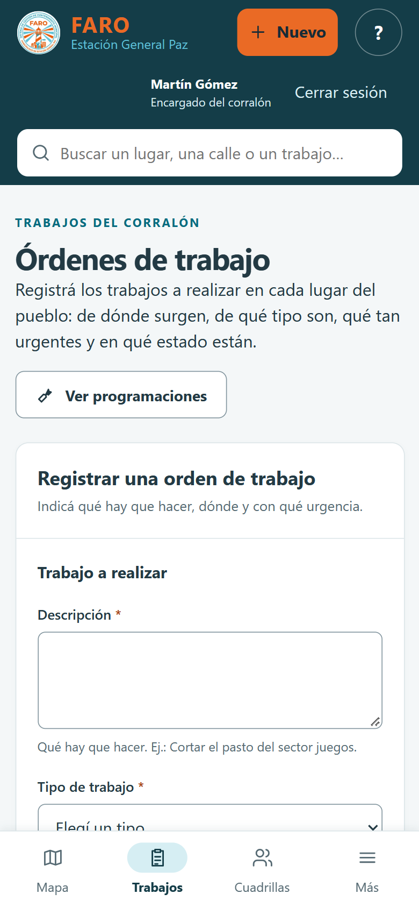
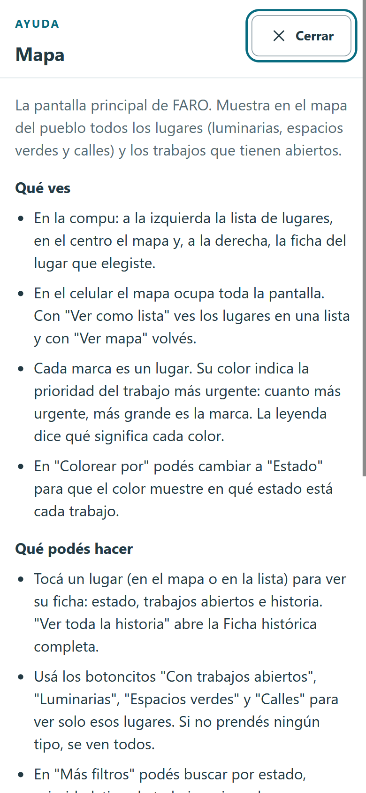
En el celular las secciones bajan, al alcance del pulgar (izquierda). A la derecha, la ayuda abierta con el botón "?".
Mensajes que se repiten en todas las pantallas
Mensaje verde (por ejemplo, "La orden de trabajo se registró correctamente."): la acción salió bien.
Mensaje rojo "No se pudo completar la operación": algo falló, casi siempre la conexión. Tocá Volver a cargar.
Campos marcados en rojo al guardar un formulario: falta un dato obligatorio o tiene un formato incorrecto; debajo del campo se explica qué corregir. Los datos que ya escribiste no se pierden.
"Deslizá la tabla hacia los lados…": en pantallas angostas, las tablas anchas se recorren deslizando hacia los costados.
4.2 Subsistema de acceso
4.2.1 Iniciar sesión
Para qué sirve
Entrar a FARO con la cuenta personal.
Quién la usa
Todas las personas, antes de empezar.
Cómo se llega
Es lo primero que aparece al abrir FARO sin haber iniciado sesión.
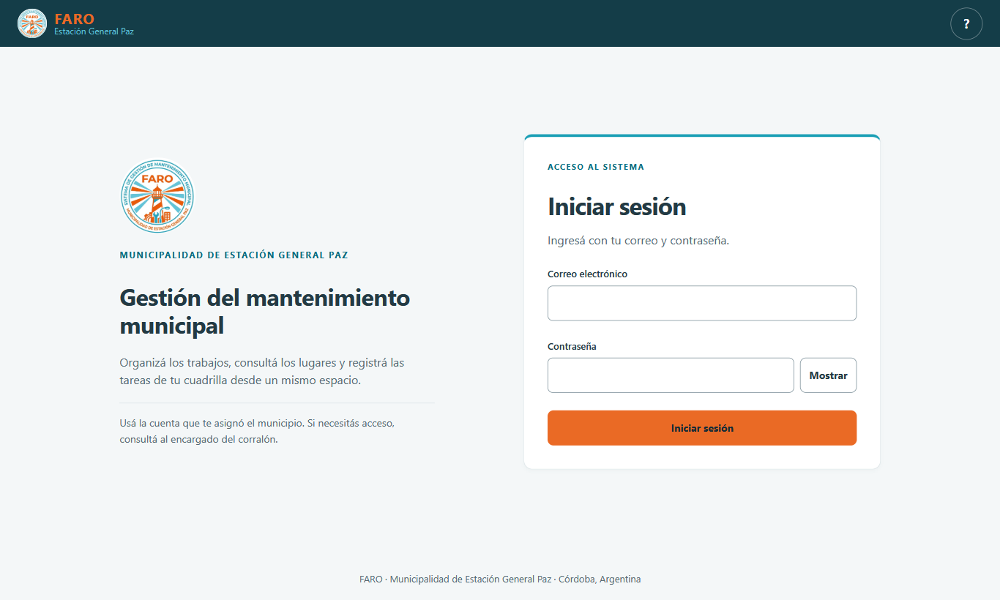
Pantalla de ingreso a FARO.
Paso a paso
Escribí tu correo en "Correo electrónico".
Escribí tu contraseña en "Contraseña". Con Mostrar podés verla para revisar que esté bien; Ocultar la vuelve a tapar.
Tocá Iniciar sesión.
Situaciones especiales
"Correo o contraseña incorrectos": revisá lo que escribiste. Si no te acordás la contraseña, pedile al encargado o a mesa de entradas que la restablezcan (botón Clave en Usuarios).
"Tu cuenta no tiene acceso habilitado": la cuenta fue dada de baja. Consultá al encargado.
"Hay cambios guardados en este celular": son cambios que hiciste sin señal en una sesión anterior. Se envían solos al entrar con tu cuenta.
4.3 Subsistema de lugares
Agrupa las pantallas que trabajan sobre los lugares del pueblo: el Mapa (la pantalla principal), Infraestructura (el registro de lugares) y la Ficha histórica (todo lo que pasó en un lugar).
4.3.1 Mapa
Para qué sirve
Ver de un vistazo todos los lugares del pueblo y dónde hay trabajos abiertos, y actuar sobre cada lugar.
Quién la usa
Encargado, mesa de entradas y capataz (el capataz solo consulta).
Cómo se llega
Es la pantalla de inicio del encargado y de mesa de entradas. También desde la sección Mapa o eligiendo un resultado del buscador.
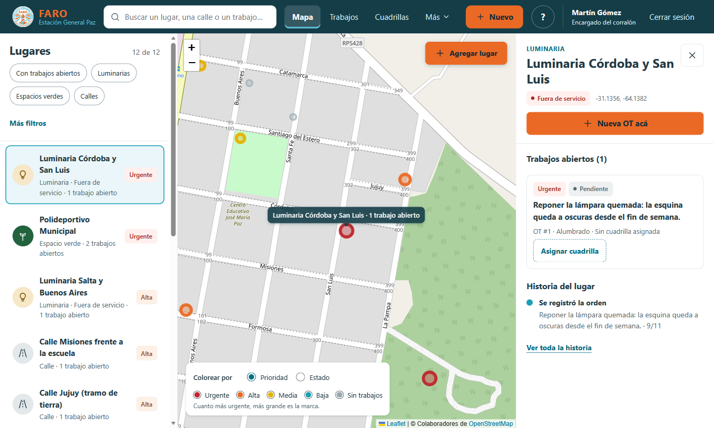
El Mapa en la computadora: lista de lugares a la izquierda, mapa en el centro y ficha del lugar elegido a la derecha.
Partes de la pantalla
Lista de lugares (izquierda): todos los lugares, con su tipo y cuántos trabajos abiertos tienen. Arriba están los botoncitos de filtro y "Más filtros".
Mapa (centro): cada marca es un lugar. El color indica la prioridad del trabajo abierto más urgente y el tamaño crece con la urgencia. Los lugares sin trabajos se ven en gris.
Leyenda: explica los colores. En "Colorear por" se puede elegir Prioridad o Estado.
Ficha del lugar (derecha): aparece al elegir un lugar. Muestra su tipo, si funciona, la ubicación, los "Trabajos abiertos" y la "Historia del lugar" más reciente.
Paso a paso: consultar un lugar
Tocá la marca del lugar en el mapa, o su nombre en la lista. (También podés buscarlo con el buscador de arriba).
A la derecha se abre su ficha, con los trabajos abiertos y la historia reciente.
Para ver toda la historia, tocá Ver toda la historia: se abre la Ficha histórica (ver 4.3.3).
Para cerrar la ficha, tocá la ✕.
Paso a paso: cargar un trabajo para un lugar (encargado y mesa de entradas)
Elegí el lugar en el mapa o en la lista.
En su ficha, tocá + Nueva OT acá.
FARO abre Trabajos con el lugar ya elegido. Completá el resto de los datos (ver 4.4.1).
Al terminar, Volver al mapa te devuelve al mismo lugar.
Paso a paso: agregar un lugar tocando el mapa (encargado y mesa de entradas)
Tocá + Agregar lugar, sobre el mapa.
Tocá el punto del mapa donde está el lugar. Aparece un pin; si no quedó justo, arrastralo o tocá otro punto. Solo se aceptan puntos dentro de Estación General Paz.
Completá "Nombre" (por ejemplo, "Luminaria San Martín y Belgrano"), "Tipo de lugar" y, si querés, "Datos técnicos". Si el lugar no funciona, desmarcá "Funciona correctamente".
Tocá Registrar lugar. El lugar aparece en el mapa y queda elegido. Para salir sin guardar, tocá Cancelar o la tecla Escape.
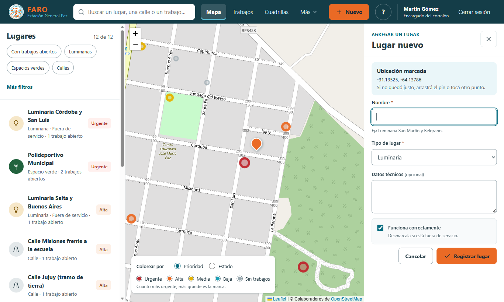
Agregar un lugar: se marca el punto en el mapa y se completan sus datos.
Paso a paso: asignar una cuadrilla desde el mapa (encargado)
Elegí el lugar. En "Trabajos abiertos", los trabajos que esperan cuadrilla muestran una lista para elegirla.
Elegí la cuadrilla y tocá Asignar. El trabajo pasa a Planificada.
Filtros
Con trabajos abiertos: muestra solo los lugares que tienen algo pendiente.
LuminariasEspacios verdesCalles: muestran solo esos tipos. Se pueden combinar; si no hay ninguno prendido, se ven todos.
"Más filtros": filtra los trabajos por texto, estado, prioridad, tipo, origen, lugar y fechas. Con la casilla "La lista muestra solo lo que se ve en el mapa", la lista se limita a la zona visible.
En el celular
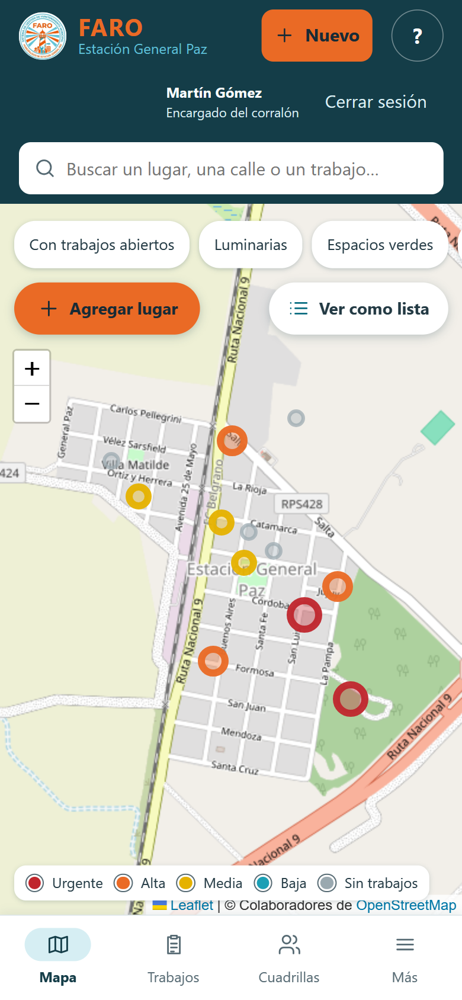
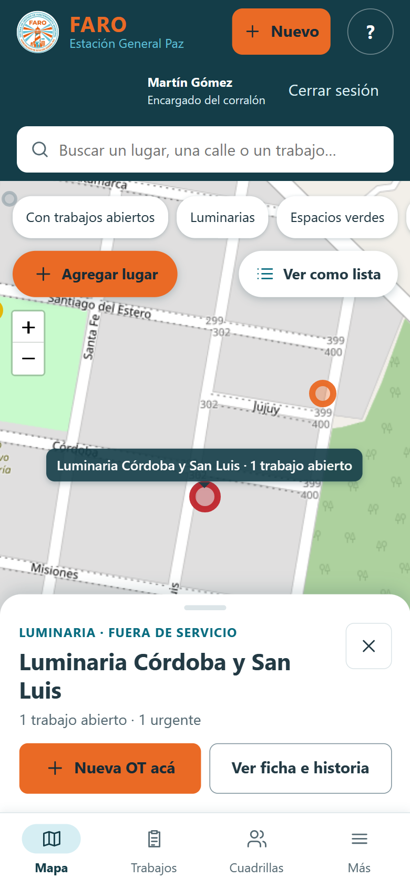
En el celular el mapa ocupa toda la pantalla (izquierda); al tocar un lugar sube su tarjeta desde abajo (derecha).
El mapa ocupa toda la pantalla y los botoncitos de filtro quedan arriba (se deslizan de costado).
Ver como lista muestra los lugares en lista; Ver mapa vuelve.
Al tocar un lugar sube una tarjeta con + Nueva OT acá y Ver ficha e historia.
¿No aparece un lugar? Probablemente un filtro lo esconde. Apagá los botoncitos o limpiá "Más filtros"; si nada coincide, FARO ofrece Ver todos los lugares. Si la lista avisa que hay lugares "fuera del pueblo", sus coordenadas están mal cargadas: el encargado puede corregirlas en Infraestructura.
4.3.2 Infraestructura
Para qué sirve
Registrar los lugares que mantiene el corralón y mantener sus datos al día.
Quién la usa
Encargado del corralón.
Cómo se llega
Más → Infraestructura, o + Nuevo → Nuevo lugar.
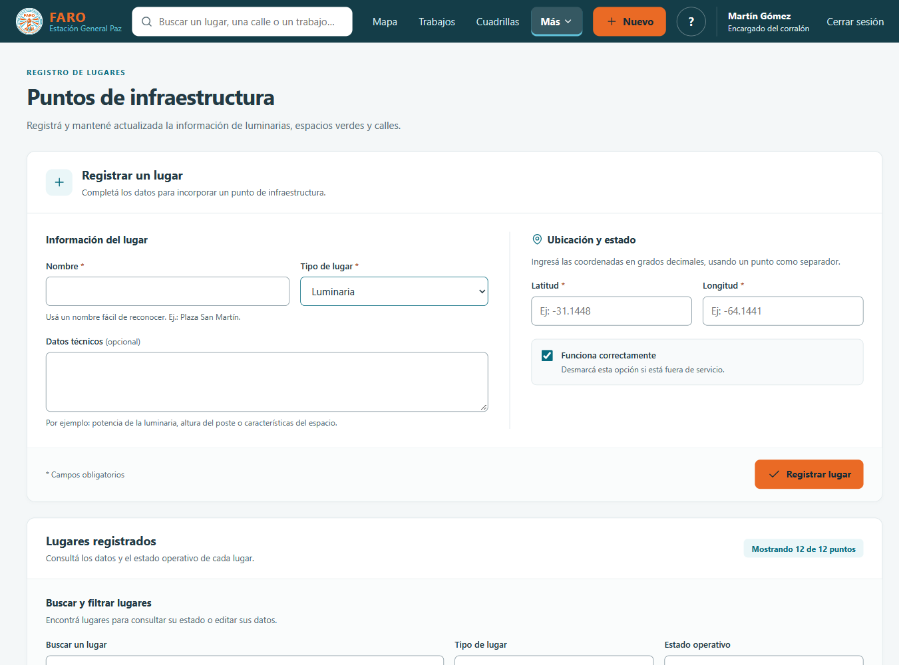
Formulario para registrar un lugar y, debajo, la lista de lugares registrados.
Paso a paso: registrar un lugar
En "Registrar un lugar", escribí el "Nombre". Usá uno fácil de reconocer, por ejemplo "Plaza San Martín".
Elegí el "Tipo de lugar": Luminaria, Espacio verde o Calle.
En "Datos técnicos" anotá lo útil para el trabajo: potencia de la luminaria, altura del poste, características del espacio…
Escribí "Latitud" y "Longitud" en grados decimales, con punto (por ejemplo, -31.1448 y -64.1441).
Si el lugar está fuera de servicio, desmarcá "Funciona correctamente".
Tocá Registrar lugar.
Más fácil desde el mapa. Para no escribir coordenadas, agregá el lugar desde el Mapa con + Agregar lugar (ver 4.3.1).
Botones de cada lugar
Botón
Qué hace
Ficha
Abre la Ficha histórica del lugar.
Editar
Carga el lugar en el formulario de arriba. Corregí lo necesario y tocá Guardar cambios, o Cancelar para dejarlo como estaba.
Borrar
Elimina el lugar después de pedir confirmación. No se puede deshacer. Si el lugar tiene órdenes de trabajo, FARO no deja borrarlo, para no perder su historia.
Buscar y filtrar
En "Buscar y filtrar lugares" podés buscar por nombre o datos técnicos y filtrar por "Tipo de lugar" y "Estado operativo" (Funciona / Fuera de servicio). Arriba de la lista se indica cuántos lugares se están mostrando.
4.3.3 Ficha histórica
Para qué sirve
Consultar todo lo que pasó en un lugar: sus datos y cada orden de trabajo con todos sus cambios.
Quién la usa
Encargado, mesa de entradas y capataz.
Cómo se llega
Desde el Mapa (Ver toda la historia), desde Infraestructura (Ficha) o desde Mis tareas (Ficha del lugar). Siempre llega con el lugar ya elegido.
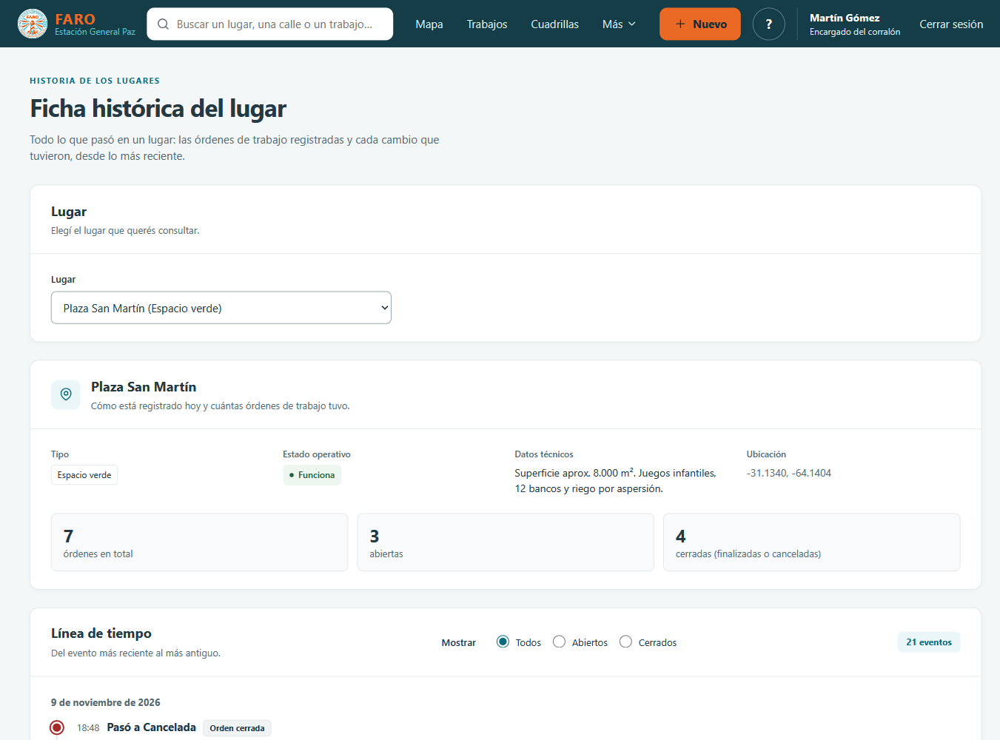
Ficha histórica: datos del lugar, resumen de órdenes y línea de tiempo.
Partes de la pantalla
Lugar: la lista para elegir qué lugar consultar.
Datos del lugar: tipo, estado operativo, ubicación, datos técnicos y un resumen de cuántas órdenes tuvo.
Línea de tiempo: cada orden registrada y cada cambio de estado, del más reciente al más antiguo, con fecha y persona.
Opciones
En "Mostrar" elegí Todos, Abiertos o Cerrados para ver solo esos trabajos.
Cambiá de lugar desde la lista "Lugar" para consultar otro.
Para atender un reclamo. La ficha permite responder rápido a un vecino: cuándo se trabajó por última vez en el lugar, qué se hizo y si hay algo pendiente.
4.4 Subsistema de órdenes de trabajo
Agrupa las pantallas que siguen un trabajo desde que se registra hasta que se termina: Trabajos (registrar y consultar), Cuadrillas (asignar) y Mis tareas (ejecutar en el terreno).
4.4.1 Trabajos
Para qué sirve
Registrar las órdenes de trabajo y consultar en qué estado está cada una.
Quién la usa
Encargado (registra, modifica y cambia estados) y mesa de entradas (registra y consulta).
Cómo se llega
Sección Trabajos, + Nuevo → Nueva orden de trabajo, o + Nueva OT acá en el Mapa.
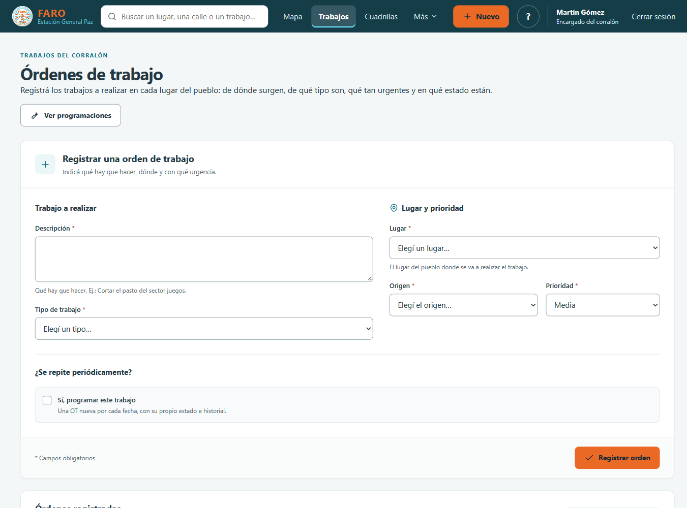
Formulario para registrar una orden de trabajo y, debajo, las órdenes registradas.
Paso a paso: registrar una orden de trabajo
En "Descripción", contá qué hay que hacer. Por ejemplo: "Cortar el pasto del sector juegos". Es obligatoria y admite hasta 500 caracteres.
Elegí el "Tipo de trabajo" (Poda, Corte de pasto, Pintura, Bacheo, Limpieza, Alumbrado u Otro).
Elegí el "Origen": Reclamo vecinal, Plan de mantenimiento u Orden directa.
Elegí el "Lugar" donde se va a trabajar.
Elegí la "Prioridad": Baja, Media, Alta o Urgente.
Tocá Registrar orden. La orden queda Pendiente y aparece primera en la lista.
Paso a paso: programar un trabajo que se repite (encargado)
Completá el trabajo igual que una orden común.
En "¿Se repite periódicamente?", marcá "Sí, programar este trabajo".
Escribí el "Nombre de la programación" (por ejemplo, "Corte de pasto quincenal de la plaza").
Elegí la "Frecuencia" y el "Intervalo" (frecuencia semanal con intervalo 2 = cada dos semanas), el día y la "Fecha de inicio". La "Fecha de fin" es opcional: si no se completa, la programación sigue hasta que se pause.
Tocá Guardar programación. FARO va a crear una orden nueva en cada fecha, con origen "Plan de mantenimiento". Para guardar una programación hace falta conexión.
Consultar las órdenes
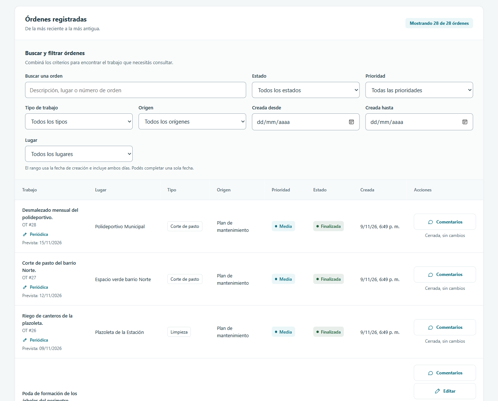
"Órdenes registradas": los filtros y, en cada orden, sus botones.
"Órdenes registradas" lista todas las órdenes, de la más reciente a la más antigua, con su trabajo, lugar, tipo, origen, prioridad, estado y fecha. Las que vienen de un plan llevan la marca Periódica.
"Buscar y filtrar órdenes" permite buscar por descripción, lugar o número y filtrar por estado, prioridad, tipo, origen, lugar y fechas ("Creada desde" / "Creada hasta"). Menos filtros los pliega.
Botones de cada orden
Botón
Qué hace
Comentarios
Abre los comentarios y fotos de la orden (ver 4.4.4).
Editar
(Encargado) Carga la orden en el formulario para corregirla. Después, Guardar cambios. Las órdenes cerradas no se pueden editar.
Pasar a…
(Encargado) Cambia el estado de la orden. Solo aparecen los pasos permitidos (ver 3.2). Finalizada y Cancelada piden confirmación.
El encargado tiene además Ver programaciones, que lleva a Mantenimiento periódico.
Sin señal. Una orden registrada sin señal aparece arriba como "Nueva · Sin enviar", todavía sin número, y se registra sola cuando vuelve la señal.
4.4.2 Cuadrillas (asignación)
Para qué sirve
Decidir qué cuadrilla hace cada trabajo pendiente y pasar un trabajo de una cuadrilla a otra.
Quién la usa
Encargado del corralón.
Cómo se llega
Sección Cuadrillas.
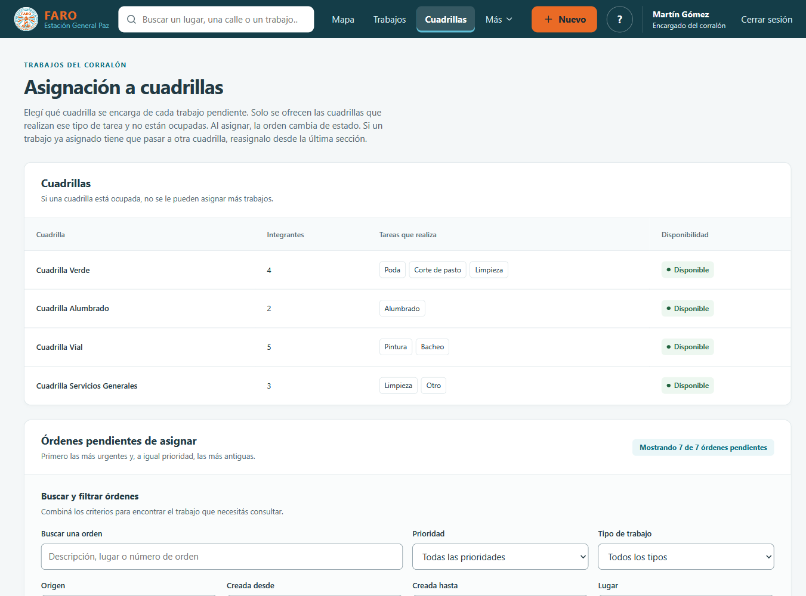
Asignación: las cuadrillas con su disponibilidad y las órdenes pendientes de asignar.
Partes de la pantalla
Cuadrillas: cada cuadrilla con sus integrantes, los tipos de trabajo que realiza y si está Disponible u Ocupada. A una cuadrilla ocupada no se le pueden asignar más trabajos.
Órdenes pendientes de asignar: primero las más urgentes y, a igual prioridad, las más antiguas. Tiene los mismos filtros que Trabajos.
Órdenes asignadas: los trabajos que ya tienen cuadrilla y no terminaron.
Paso a paso: asignar un trabajo
Buscá la orden en "Órdenes pendientes de asignar".
En "Asignar a", elegí la cuadrilla. Solo aparecen las que realizan ese tipo de trabajo y no están ocupadas.
Tocá Asignar. La orden pasa a Planificada, sale de la lista de pendientes y aparece en Mis tareas de esa cuadrilla.
Paso a paso: reasignar un trabajo
En "Órdenes asignadas", buscá la orden.
En "Reasignar a", elegí otra cuadrilla que realice esa tarea.
Tocá Reasignar. La orden cambia de cuadrilla y mantiene su estado.
4.4.3 Mis tareas
Para qué sirve
Ver los trabajos asignados a una cuadrilla y registrar, desde el lugar, cuándo empiezan y cuándo terminan.
Quién la usa
Capataz de cuadrilla (es su pantalla de inicio) y encargado (para supervisar).
Cómo se llega
El capataz entra directo. El encargado, desde Más → Mis tareas.
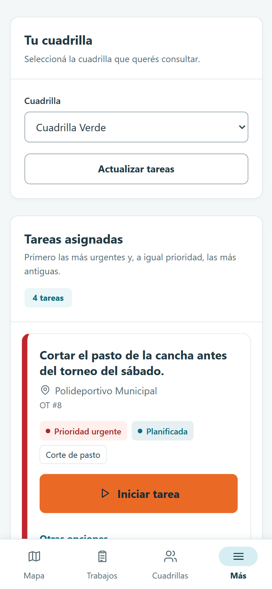
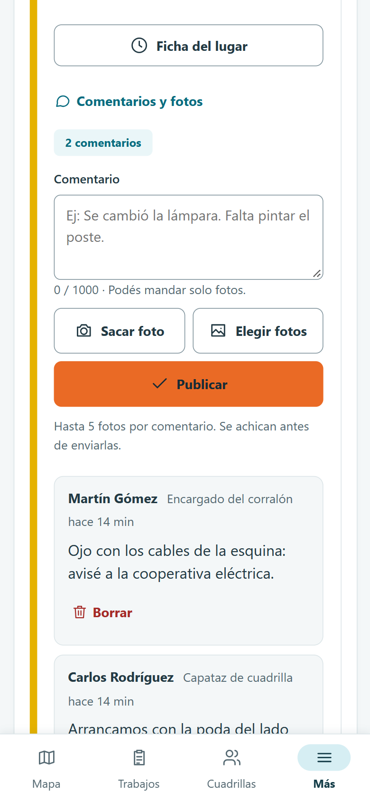
Mis tareas en el celular del capataz (izquierda) y los comentarios y fotos de una tarea (derecha).
Partes de la pantalla
Consulta sin conexión (solo capataz): para guardar una copia de las tareas en el celular.
Tu cuadrilla: el capataz ve la cuadrilla de su cuenta; el encargado elige qué cuadrilla supervisar (FARO la recuerda para la próxima vez). Actualizar tareas trae los trabajos recién asignados.
Tareas asignadas: una tarjeta por trabajo, primero las más urgentes. Cada tarjeta muestra el número, la descripción, el lugar, la prioridad y el estado.
Paso a paso: hacer un trabajo
Al llegar al lugar, tocá Iniciar tarea en la tarjeta. El trabajo pasa a En curso.
Si hace falta, abrí "Comentarios y fotos" para contar cómo va o mandar fotos.
Al terminar, tocá Finalizar tarea y confirmá. El trabajo pasa a Finalizada y sale de la lista.
FARO pregunta "¿Sumás fotos del trabajo terminado?". Podés agregarlas ahí mismo o tocar Listo, cerrar.
Otras opciones de cada tarea
"Otras opciones" muestra los demás estados posibles, por ejemplo Pasar a Cancelada.
Ficha del lugar abre la historia del lugar, útil para saber qué se hizo antes.
Paso a paso: preparar el celular antes de salir (capataz)
Con señal, en "Consulta sin conexión", tocá Guardar copia local.
Si en el terreno abrís FARO sin señal, tocá Ver copia local para consultar tus tareas.
La copia se renueva con Actualizar copia local y se borra con Eliminar copia local.
Sin señal también se puede iniciar y finalizar. El cambio queda en el celular con la marca "Sin enviar" y se envía solo cuando vuelve la señal (ver 2.5).
4.4.4 Comentarios y fotos de una orden
Para qué sirve
Dejar registro de cómo va un trabajo, con texto y fotos, a la vista de todos.
Quién la usa
Todos los roles que ven la orden.
Cómo se llega
Comentarios en Trabajos, o "Comentarios y fotos" en una tarjeta de Mis tareas.
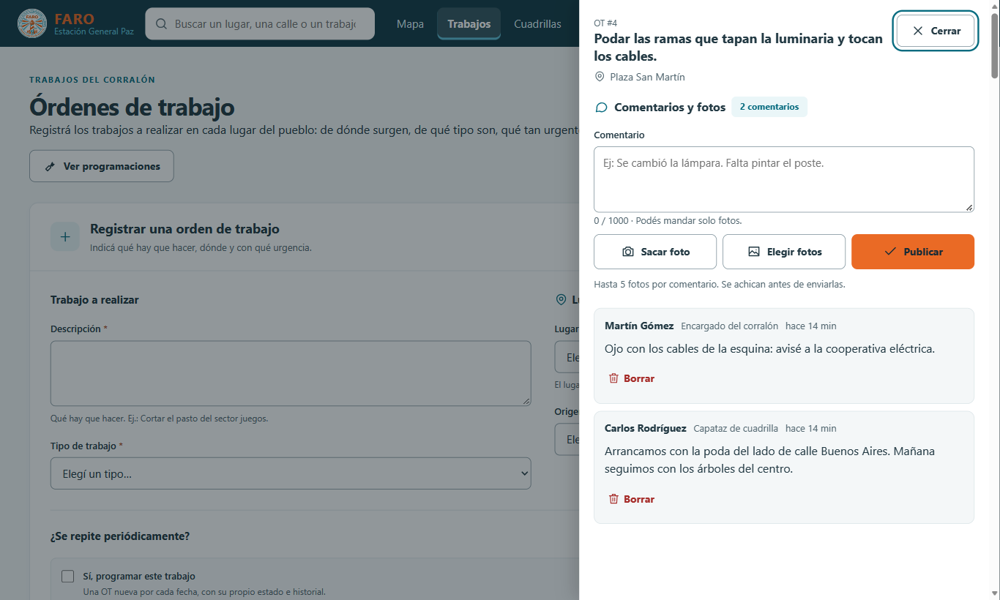
La hoja de comentarios y fotos de una orden de trabajo.
Paso a paso: publicar un comentario
Escribí el comentario. Por ejemplo: "Se cambió la lámpara. Falta pintar el poste."
Si querés, agregá fotos con la cámara o desde la galería: hasta 5 por comentario. FARO las achica antes de enviarlas para que no gasten muchos datos.
Tocá Publicar.
Al tocar una foto se abre en grande; con las flechas se pasa a la anterior o a la siguiente. Si tenés permiso para borrar un comentario, aparece la opción de borrarlo; FARO pide confirmación antes.
4.5 Subsistema de planificación
4.5.1 Mantenimiento periódico
Para qué sirve
Administrar los trabajos que se repiten y controlar si se cumplen a tiempo.
Quién la usa
Encargado del corralón.
Cómo se llega
Más → Mantenimiento periódico, o Ver programaciones en Trabajos.
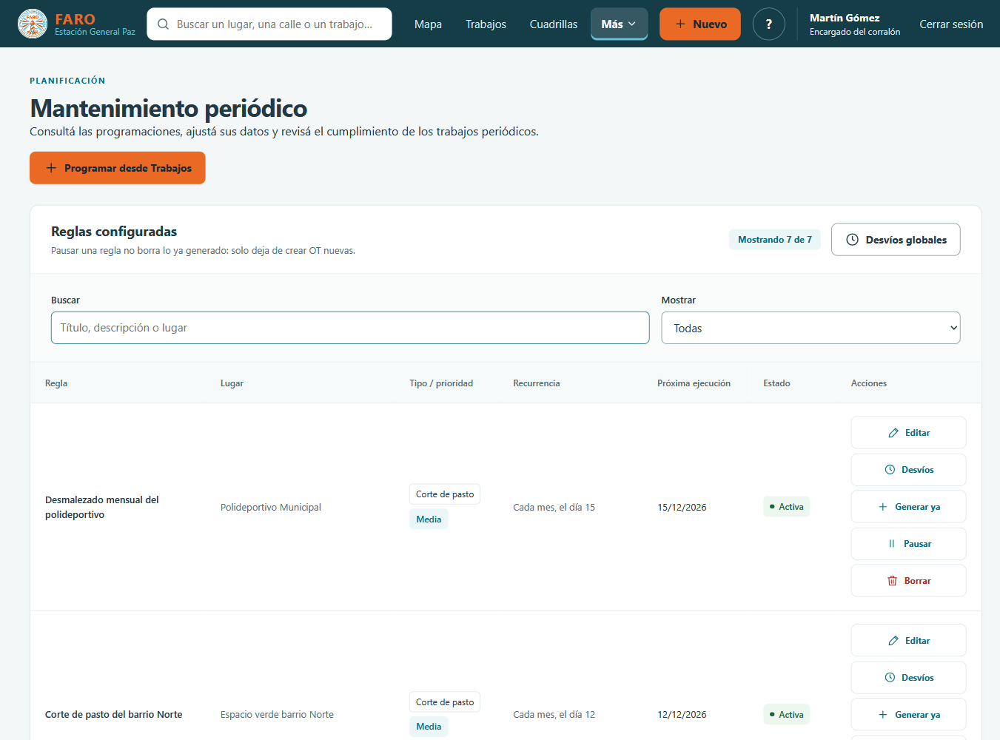
Las reglas de mantenimiento configuradas, con su recurrencia y próxima fecha.
Partes de la pantalla
Reglas configuradas: cada programación con su lugar, tipo y prioridad, cada cuánto se repite, la "Próxima ejecución" y si está Activa o Pausada. Se puede buscar por texto y filtrar en "Mostrar" (Todas, Activas, Pausadas).
Programar desde Trabajos: lleva al formulario de Trabajos con la opción de programar ya marcada, para crear una regla nueva.
Botones de cada regla
Botón
Qué hace
Editar
Abre "Editar programación": título, descripción, lugar, tipo, prioridad, cuadrilla preasignada y recurrencia. Si se elige una cuadrilla, cada orden que genere la regla arranca ya asignada a ella.
Desvíos
Muestra las órdenes que generó la regla, comparando la fecha planificada con la ejecutada.
Generar ya
Crea en el momento la próxima orden, sin esperar a su fecha.
Pausar / Reactivar
Pausar deja de crear órdenes nuevas, sin borrar las ya creadas. Reactivar la vuelve a poner en marcha.
Borrar
Elimina la regla después de pedir confirmación. No se puede deshacer.
Desvíos
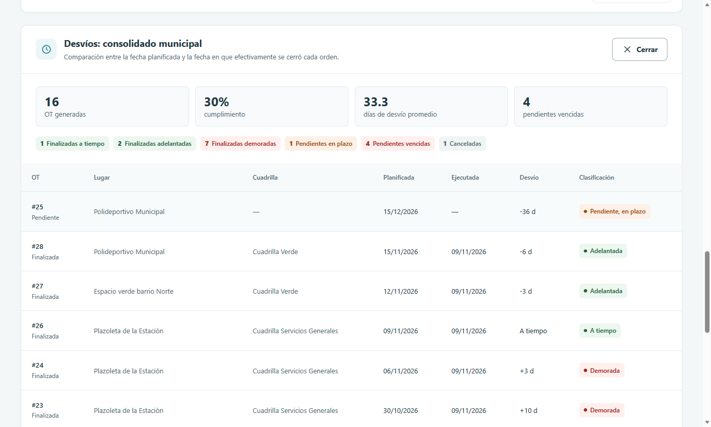
El panel de desvíos: planificado contra ejecutado.
El panel de desvíos resume cómo se cumplió el plan: Finalizadas a tiempo, Finalizadas adelantadas, Finalizadas demoradas, Pendientes en plazo, Pendientes vencidas y Canceladas. Debajo, cada orden con su fecha planificada, la fecha en que se cerró y cuántos días de diferencia hubo. Desvíos globales muestra lo mismo para todas las reglas del municipio.
4.6 Subsistema de gestión y control
4.6.1 Usuarios
Para qué sirve
Administrar las cuentas del personal que usa FARO.
Quién la usa
Encargado y mesa de entradas.
Cómo se llega
Más → Usuarios.
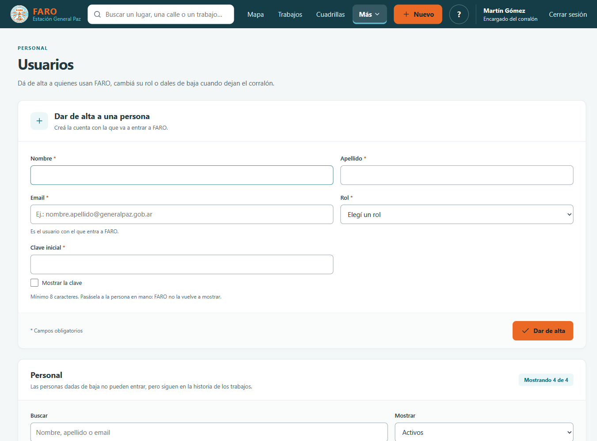
Alta de personas y lista del personal.
Paso a paso: dar de alta a una persona
En "Dar de alta a una persona", completá "Nombre", "Apellido" y "Email" (es el usuario con el que va a entrar).
Elegí el "Rol": Encargado del corralón, Mesa de entradas o Capataz de cuadrilla.
Si es capataz, elegí la "Cuadrilla a cargo".
Escribí una "Clave inicial" y tocá Dar de alta.
Pasale a la persona su email y su clave en mano.
Botones de cada persona
Botón
Qué hace
Editar
Carga a la persona en el formulario para cambiar sus datos, su rol o su cuadrilla.
Clave
Le pone una contraseña nueva (por ejemplo, si se la olvidó). Hay que pasársela en mano.
Dar de baja
Le quita el acceso, aunque tenga la sesión abierta. No se borra nada: sigue en la historia de los trabajos.
Reactivar
Devuelve el acceso a alguien dado de baja.
Para encontrar a alguien, usá "Buscar" (nombre, apellido o email) y "Mostrar" (Activos, De baja o Todos).
4.6.2 Auditoría
Para qué sirve
Saber quién creó, modificó o eliminó cada dato importante de FARO, y cuándo.
Quién la usa
Encargado del corralón.
Cómo se llega
Más → Auditoría.
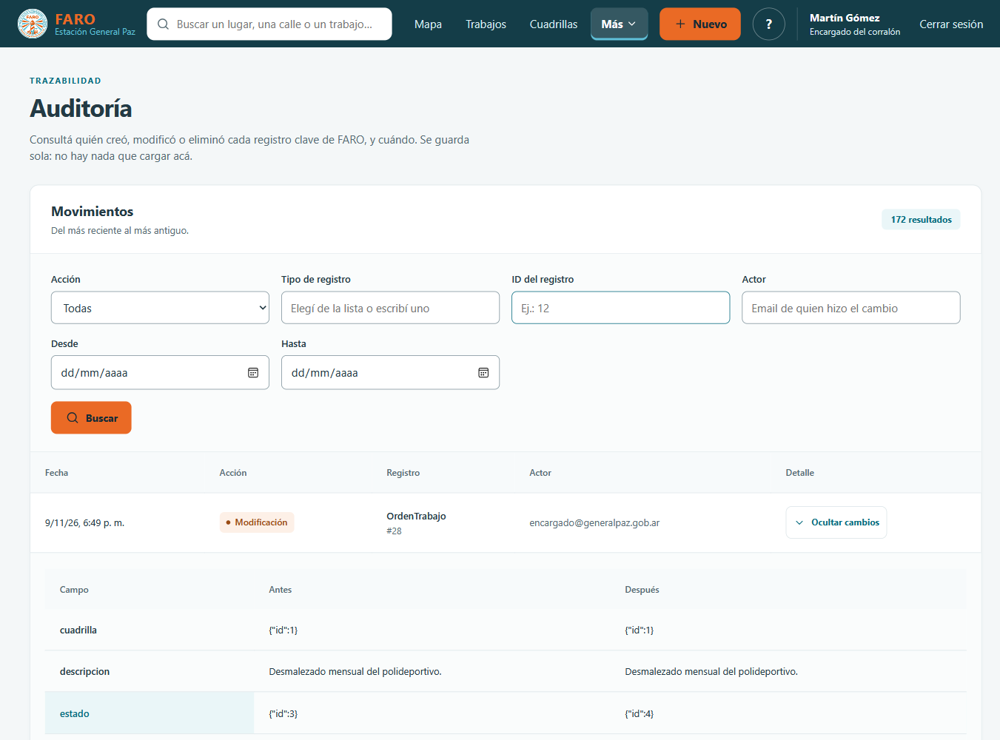
Los movimientos registrados, con el detalle de un cambio abierto.
La auditoría se completa sola: cada vez que alguien registra, cambia o borra una orden, un lugar, un usuario u otro dato importante, FARO lo anota. En esta pantalla solo se consulta.
Paso a paso: buscar un cambio
Completá los filtros que necesites: "Tipo de registro" (orden de trabajo, punto de infraestructura, usuario…), "ID del registro" (por ejemplo, el número de la orden), "Acción" (Creación, Modificación o Eliminación), "Actor" (el email de quien hizo el cambio) y las fechas "Desde" y "Hasta".
Tocá Buscar.
En cada movimiento, Ver cambios muestra campo por campo cómo estaba antes y cómo quedó después.
Si hay muchos resultados, pasá de página con Anterior y Siguiente.
4.6.3 Reportes
Para qué sirve
Ver los números del corralón: cuántos trabajos entraron, cuántos se resolvieron, quién los hizo y si el plan de mantenimiento se cumple.
Quién la usa
Encargado del corralón.
Cómo se llega
Más → Reportes.
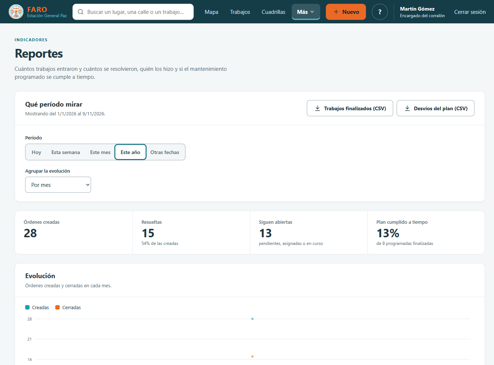
El tablero de reportes con los totales y los gráficos del período.
Paso a paso: consultar un período
En "Qué período mirar", elegí Hoy, Esta semana, Este mes o Este año. Con Otras fechas elegís "Desde" y "Hasta".
En "Agrupar la evolución", elegí si ver los números por día, por semana o por mes.
FARO calcula los indicadores del período.
Qué muestra
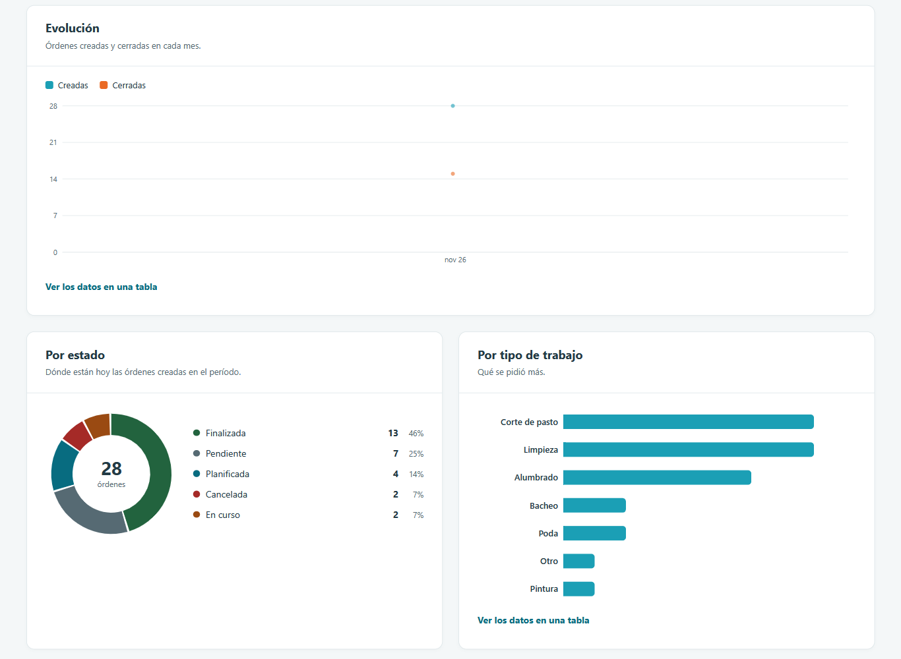
Los gráficos de evolución, por estado, por tipo de trabajo y por cuadrilla.
Sección
Qué muestra
Totales
Órdenes creadas, resueltas, las que siguen abiertas y qué parte del plan se cumplió a tiempo.
Evolución
Gráfico de órdenes creadas y cerradas en cada día, semana o mes.
Por estado
Dónde están hoy las órdenes creadas en el período.
Por tipo de trabajo
Qué se pidió más.
Por cuadrilla
La carga de trabajo de cada cuadrilla.
Mantenimiento programado
Cómo terminaron las órdenes del plan con fecha en el período.
Debajo de cada gráfico, "Ver los datos en una tabla" muestra los mismos números en forma de tabla.
Descargas
Trabajos finalizados (CSV) y Desvíos del plan (CSV) descargan los datos del período en un archivo que se abre con Excel u otra planilla de cálculo.
5. Preguntas frecuentes y problemas comunes
Situación
Qué hacer
Me olvidé la contraseña.
Pedile al encargado o a mesa de entradas que te pongan una nueva desde Usuarios (botón Clave).
No veo una pantalla que usa un compañero.
Cada rol ve pantallas distintas (ver 2.4). Si necesitás otra, consultá al encargado.
Aparece "No se pudo completar la operación".
Revisá la conexión y tocá Volver a cargar. Si sigue pasando, avisá al encargado.
No aparece un lugar en el mapa.
Revisá los filtros (botoncitos y "Más filtros"). Si el lugar figura "fuera del pueblo", hay que corregir sus coordenadas en Infraestructura.
No me aparecen tareas en Mis tareas.
Tocá Actualizar tareas. Si sigue vacío, todavía no hay trabajos asignados a tu cuadrilla, o tu cuenta no tiene cuadrilla: consultá al encargado.
No puedo asignar un trabajo a una cuadrilla.
Solo se ofrecen las cuadrillas que hacen ese tipo de trabajo y no están ocupadas.
No puedo borrar un lugar.
Los lugares con órdenes de trabajo no se pueden borrar, para no perder su historia. Si dejó de existir, editalo y marcalo como fuera de servicio.
Hice algo sin señal, ¿se perdió?
No. Queda en el celular como "Sin enviar" y se envía solo cuando vuelve la señal, incluso si cerraste la sesión.
Dice "para revisar".
Mientras no tenías señal, el trabajo cambió. Leé lo que muestra FARO y elegí qué hacer con tu cambio.
Me equivoqué y finalicé o cancelé una orden.
Las órdenes cerradas no se pueden reabrir. Registrá una orden nueva para el mismo lugar y, si hace falta, dejá un comentario explicando.
Aparece "Hay una versión nueva de FARO".
Terminá lo que estabas haciendo y tocá Actualizar.